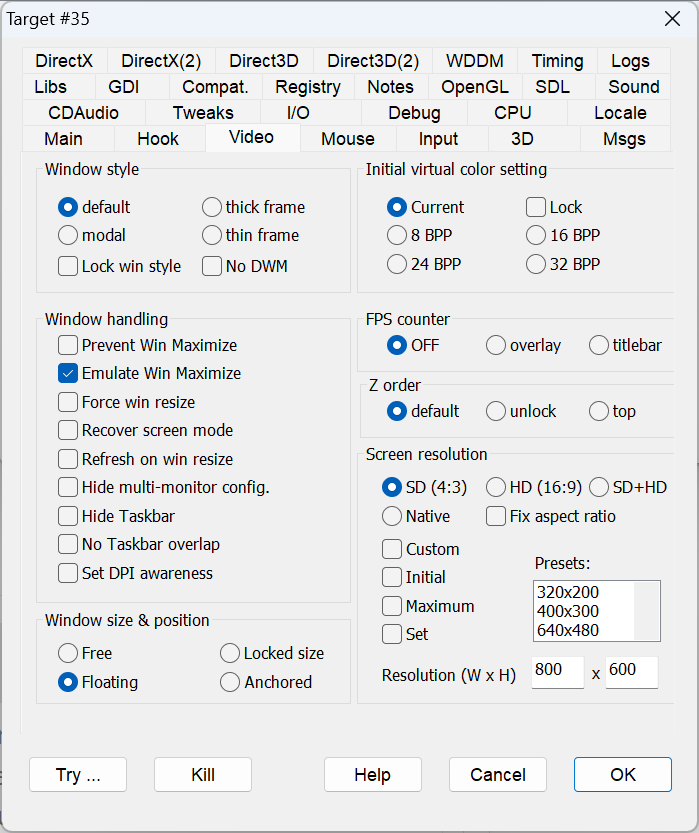

Window style
|
Default |
Initializes the game window with a title bar and resizeable borders. |
|
|
thick frame |
FIXWINFRAME |
To get overlapped window with thick border. |
|
modal |
MODALSTYLE |
A borderless and titleless modal style is chosen. |
|
thin frame |
FIXTHINFRAME |
To get overlapped window with thin border. |
|
Lock win style |
LOCKWINSTYLE |
Intercepts messages and calls that the program makes to itself to change its own windowstyle. |
|
No DWM |
DISABLEDWM |
Disables a few DWM (Desktop Window Manager) desktop composition visual features for the target task. This setting can increase the compatibility with old programs. |
Window handling
|
Prevent Win Maximize |
PREVENTMAXIMIZE |
Some modern games don't actually go into fullscreen mode, but just make the window occupy the whole screen. This option intercepts Windows messages and USER32 calls to avoid changing the window position and size to make it a fullscreen window. |
|
Emulate Win Maximize |
EMULATEMAXIMIZE |
To assign proper size & position to maximized windows. This flag is useful for "Mig Alley". |
|
Force win resize |
FORCEWINRESIZE |
Experimental (and not working very well so far): should force window resizing messages to be processed so that the window can be resized by dragging its borders. |
|
Recover screen mode |
RECOVERSCREENMODE |
Sets the screen mode to registry default settings. In general, DxWnd intercepts any attempt to change display settings and prevents unwanted operations, but some programs still send display settings instructions before DxWnd can possibly intercept them (e.g., before the window is created and the windows hook is invoked). In this case, changing the display settings right afterward is the only possible solution. Try this when the other options don't work. |
|
Refresh on win resize |
REFRESHONRESIZE |
Any decently written Windows game should take care of refreshing the screen's primary surface when resized, and most fullscreen games do it. Some don't, because they were not supposed to ever be resized. This flag is used force a refresh (useful for the game "Uprising: Join or Die"). |
|
Hide multi-monitor config |
HIDEMULTIMONITOR |
Makes the program ignore multiple monitors in your system configuration, giving information about the primary monitor only. |
|
Hide Taskbar |
HIDETASKBAR |
Forces the Windows taskbar to hide while a game is running.
|
|
No Taskbar overlap |
NOTASKBAROVERLAP |
Prevents the window from overlapping on the desktop taskbar when wrong coordinates are set in the position fields. |
|
Set DPI awareness |
SETDPIAWARE |
Sets DPI awareness for the hooked program. |
 NOTE: The action takes place only when the "
NOTE: The action takes place only when the "
Window size & position
|
Free |
Allows you to move and resize the window freely, with commands from inside the game (through system calls) or from external user commands (such as grabbing the window border to stretch or move the window). |
|
Floating |
Move and resize operations are allowed only from user commands, and internal operations are intercepted and neutralized. |
|
Locked size |
It is only possible to move the window by external commands from the user, and the window can't be stretched or altered by internal operations. |
|
Anchored |
The window will remain fixed in its original position. |
Initial virtual color setting
|
Current |
Does not change the video color mode. |
|
8 BPP |
This flag pretends that you had switched the desktop to 8bpp color mode before starting the game, making the requirement to set 8bpp color desktop mode useless. This option tells the game that the desktop setting is in 8bpp mode already. |
|
16 BPP |
Same as above, but declaring a 16bpp setting. |
|
24 BPP |
Same as above, but declaring a 24bpp setting. |
|
32 BPP |
Same as above, but declaring a 32bpp setting. |
|
Lock |
If this flag is set, the color depth set as initial value will be held constant for all the target program life, preventing pixel format changes or reporting a fixed format on queries. |
FPS counter
|
OFF |
||
|
overlay |
SHOWFPSOVERLAY |
When checked, the FPS counter is drawn as an overlay of the program client area, in a corner of the screen and periodically and randomly moved to the other cornes to avoid accidentally overlap an important screen region. |
|
titlebar |
SHOWFPS |
When checked, the FPS counter is appended to the window title. |
Z order
|
default |
||
|
unlock |
UNLOCKZORDER |
Some games repeatedly bring their window to the top of the Z-order, meaning that they insist on remaining on top of all the other windows. This flag prevents the hooked game from updating its own Z-order. |
|
top |
LOCKTOPZORDER |
This option will try to keep the game window on top. |
Screen resolution
Screen resolution affects the resolutions detected by the game. There is a choice of the following values:
|
SD (4:3) |
SUPPORTSVGA |
The classic non-widescreen resolutions starting from 320x200. |
|
HD (16:9) |
SUPPORTHDTV |
The typical widescreen resolutions starting from 640x360. |
|
SD+HD |
SUPPORTSVGA|SUPPORTHDTV |
The flag enables the merging of all SVGA and HDMI modes. |
|
Native |
NATIVERES |
The resolution returned by the video card driver. |
|
Fix aspect Ratio |
FIXASPECTRATIO |
In non-emulated modes, by default DxWnd doesn't alter the resolutions reported by the system. This flag can be used in conjunction to the SD or HD flags (see above) to pretend that each resolution value has either a 4:3 (when SD is set) or a 16:9 (when HD is set) aspect ratio. In this way a program can be forced to detect and use the desired aspect ratio. The flag is ignored when using emulated modes. |
|
Custom (Custom resolution) |
CUSTOMRES |
This setting can be used to add a custom resolution whose size is determined by the width and height given in the adjacent text fields. BEWARE: This video mode is virtually supported with all the emulated color depths for the VGA or HDMI emulated video modes, but is not valid if the NATIVERES flag is selected. |
|
Initial (Initial resolution) |
INITIALRES |
This setting can be used to set the initial screen resolution to the width and height given in the adjacent text fields. |
|
Maximum (Maximum resolution) |
MAXIMUMRES |
This setting can be used to set the maximum screen resolution detected by the target program. Its value corresponds to the width and height given in the adjacent text fields. |
|
Set (Set resolution) |
SETRESOLUTION |
This setting can be used to force the desktop screen resolution to the values corresponding to the width and height given in the adjacent text fields. The resolution will be set before the launch of the target program and the default settings will be restored automatically after the program termination. The values must correspond to a desktop resolution supported by your system, or the resolution change won't occur. The resolution changes are performed by the DxWnd GUI directly, so this will take place only when the target program is run from the GUI. Changing the desktop resolution to lower values can help in several ways. It will reduce the CPU workload in case of image scaling or stretching. If the target program doesn't allow stretching, it will make the rendering to fit a larger area of the screen improving the visibility. |
|
Resolution (W x H) |
In the W and H fields you can select the resolution values that are valid for any of the flags CUSTOMRES, INITIALRES MAXIMUMRES and SETRESOLUTION if they are selected. This way you can, for instance, add a custom resolution value W x H, or set an initial and maximum resolution value W x H. The Listbox "Presets:" above the fields is only a helper to select a couple of typical values with a single click with no need to type the values in the edit boxes. |
Note that low resolutions like the 320x200 resolution is typically no longer supported or not enumerated by the driver, but it is not a problem to emulate it in a window, and this resolution is necessary to run some older programs.
The actual list of the supported video modes depends on several factors. The video resolutions in emulated modes come from the selected flags (SVGA or HDMI or All) plus, when set, the additional custom resolution. In case of non-emulated modes, the custom resolution is not considered, since it is not a real resolution.
Finally, in both cases, the list is trimmed by eliminating all the resolutions that exceed the limits that are set, if any.
For what concerns color depths, the emulated modes for 2D DirectDraw calls include support for 8, 16 (RGB555 and RGB565), 24 and 32-bit color depths. 3D Direct3D functions instead only support native color depths and, on Windows 10 or Windows 11, the possibility to emulate 16-bit colors is in Direct3D8 and Direct3D9.